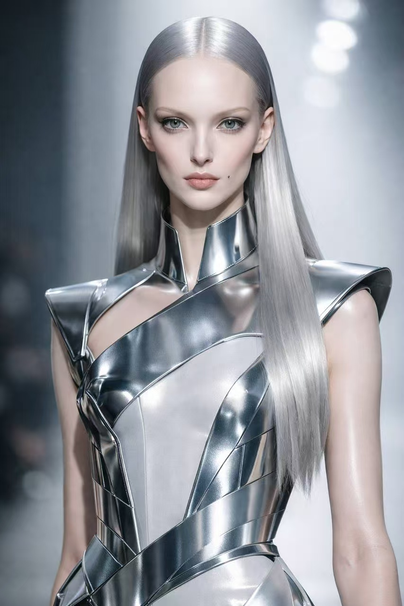
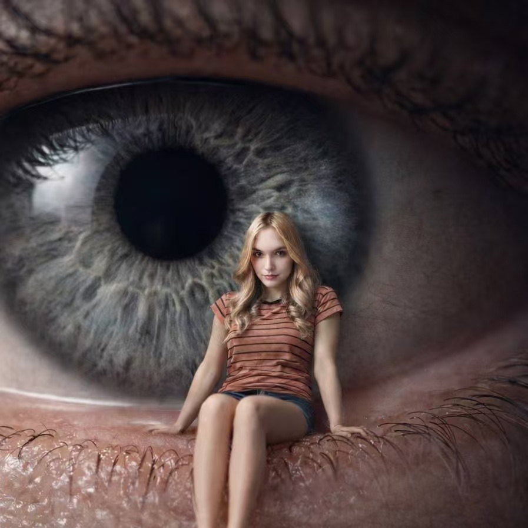
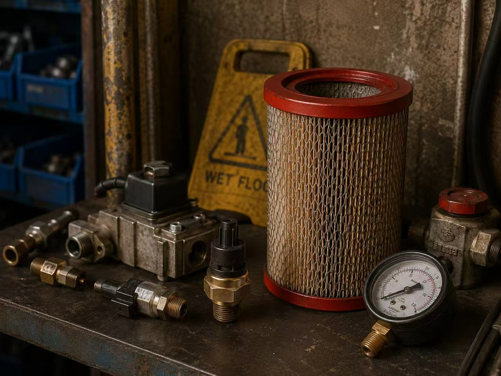
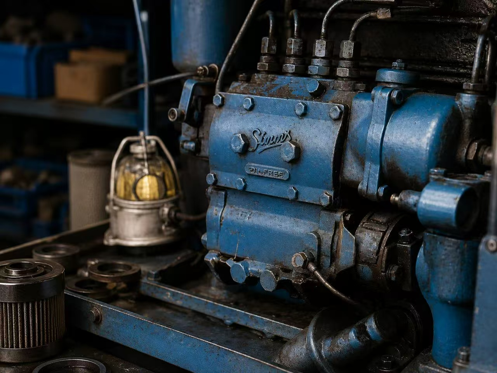
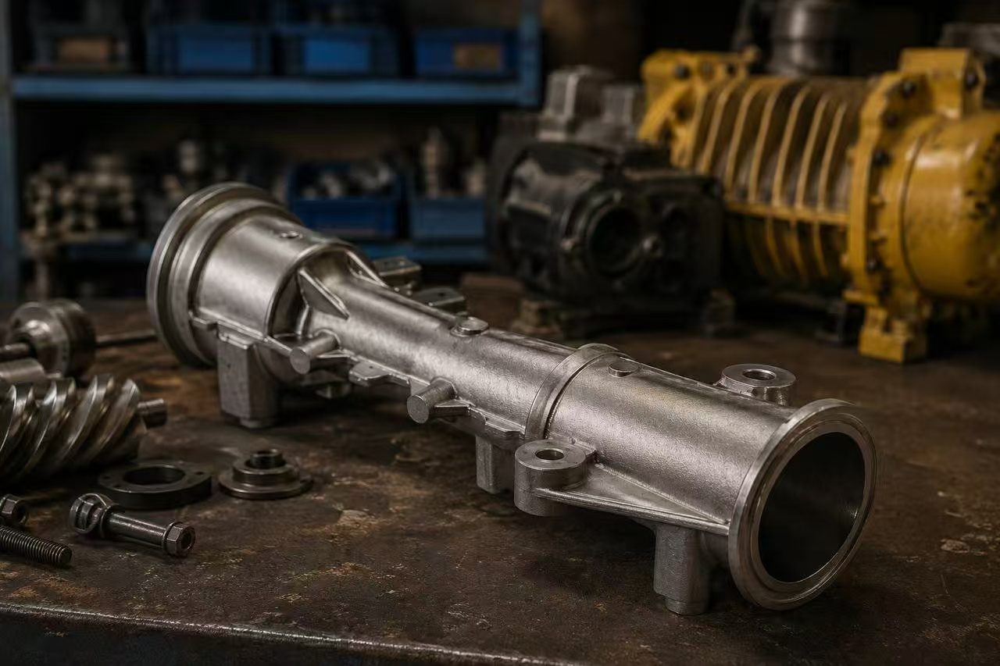
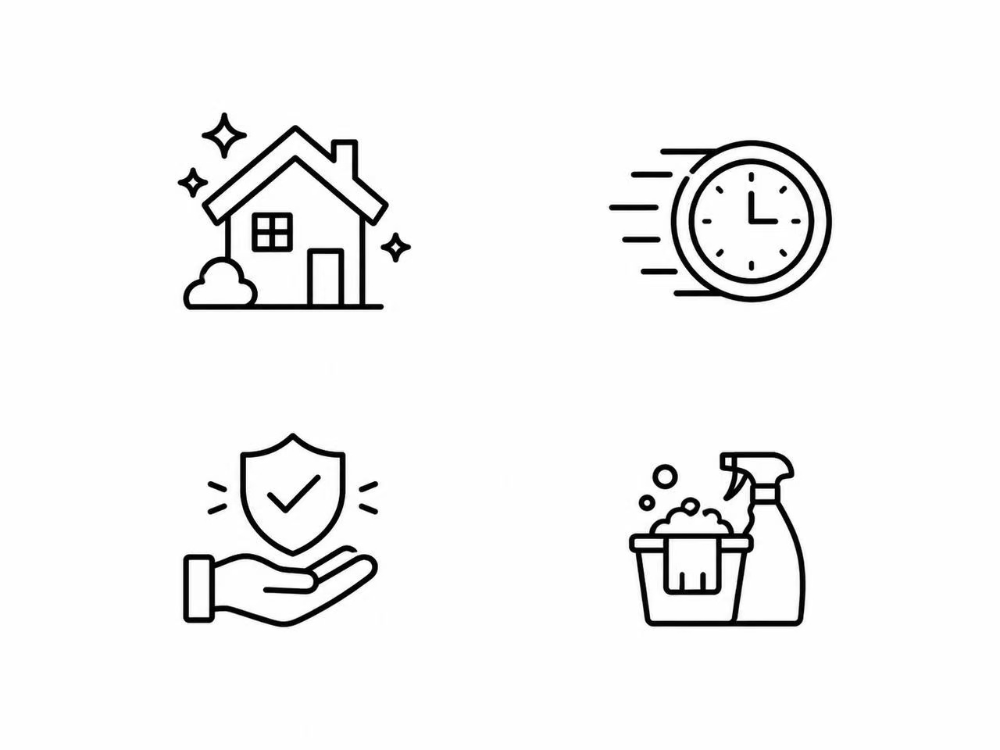
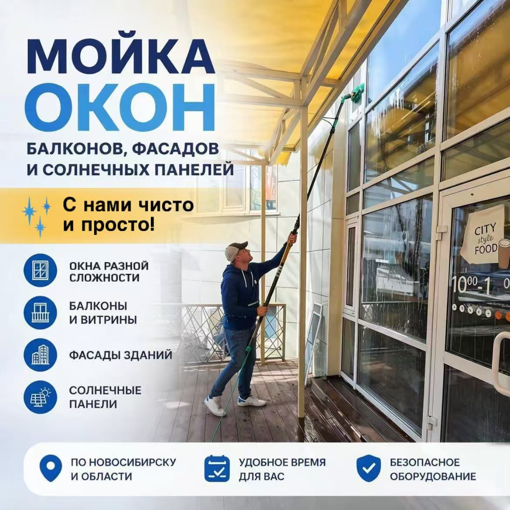
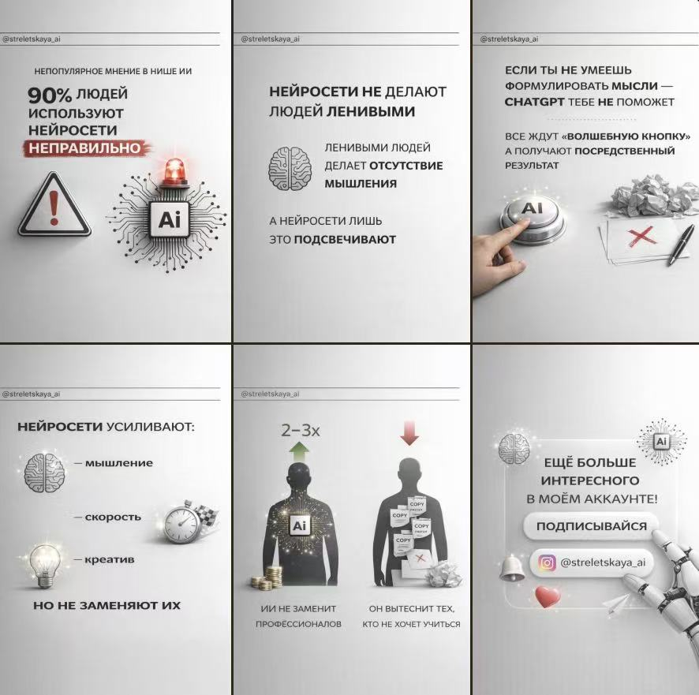
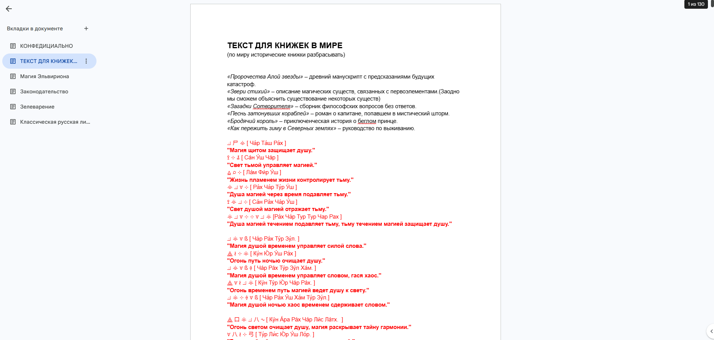
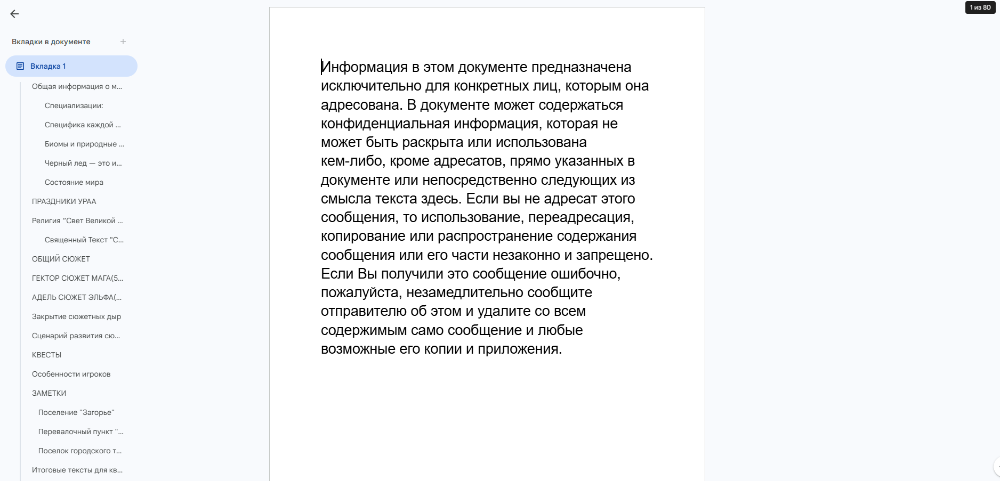

Trend video
TikTok-видео с AI-генерацией
Создание визуала, генерация изображений, сборка кадров и монтаж под трендовый формат короткого видео.
Портфолио
Подборка работ GROOXO: видео, AI-персонажи, модели, промышленные визуалы, графика для бизнеса, карусели, игровые материалы и брендинг.
Видео, созданные через генерацию изображений, оживление, монтаж, работу с аватарами и адаптацию под короткие digital-форматы.
Создание визуала, генерация изображений, сборка кадров и монтаж под трендовый формат короткого видео.
Работа с генерацией изображений, динамикой, монтажом и визуальной подачей под TikTok/Reels-формат.
Создание digital-персонажа для образовательного проекта и подготовка видеоформата для онлайн-курсов.
Видео с нейроаватаром для регулярного digital-контента, образовательной подачи или ведения соцсетей.
Digital-модели и визуальные образы, которые можно использовать для брендов одежды, рекламных кампаний, каталогов и соцсетей.

Создание digital-образа, который можно адаптировать под визуалы бренда, кампейны, каталоги и рекламные материалы.
Проработка лица, стилистики, настроения и визуального характера digital-модели.
Короткое видео с digital-моделью для дальнейшего использования в брендинге, соцсетях и рекламной подаче.
Арт-визуалы с необычной композицией, атмосферой, визуальной метафорой и акцентом на образность.

Сюрреалистичная композиция с эффектом масштаба, портретности и визуальной метафоры.
Реалистичные изображения оборудования и деталей для сайтов, каталогов, карточек товаров и презентационных материалов.

Реалистичный визуал оборудования для технической и коммерческой подачи проекта.

Предметный AI-визуал для сайта-каталога и презентационной подачи B2B-направления.

Создание реалистичной предметной сцены с техническими элементами и аккуратной подачей деталей.
Иконки, обложки, карусели и визуальные материалы для соцсетей, Avito, презентаций и коммерческой упаковки.

Набор чистых иконок для визуального оформления услуг, сайта или презентационных материалов.

Коммерческая обложка для объявления с акцентом на понятность, услугу и визуальное выделение.
Дополнительный вариант визуальной подачи для объявления, услуги или коммерческого предложения.

Визуальная карусель, объединённая в один презентационный кадр для показа структуры, дизайна и подачи контента.
Организация работы над игровым проектом и создание внутриигровых текстовых материалов: книжек, описаний и элементов мира.

Проработка объёма, структуры, количества страниц и логики текстовых материалов внутри игрового мира.

Тексты, описания и элементы мира, которые помогают раскрывать атмосферу проекта и погружать игрока в историю.
Логотипы, визуальные элементы и базовая айдентика для проектов, которым нужна цельная и узнаваемая подача.
Логотип, визуальная концепция и структура для B2B-проекта в сфере компрессорного оборудования.